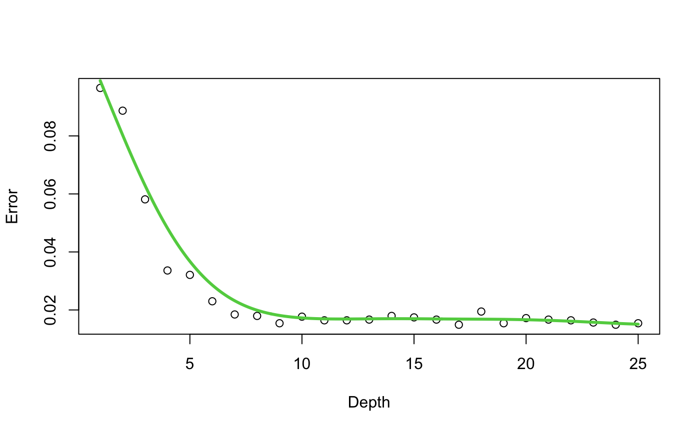
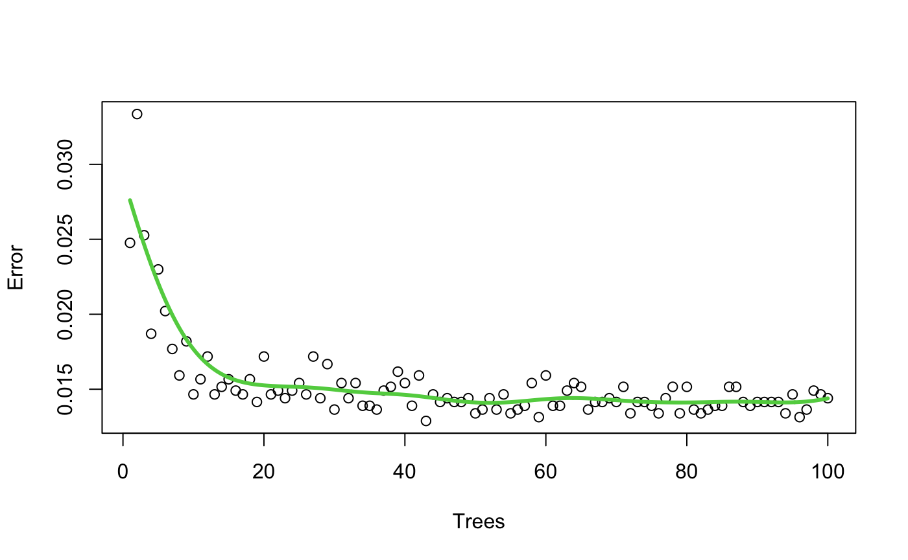
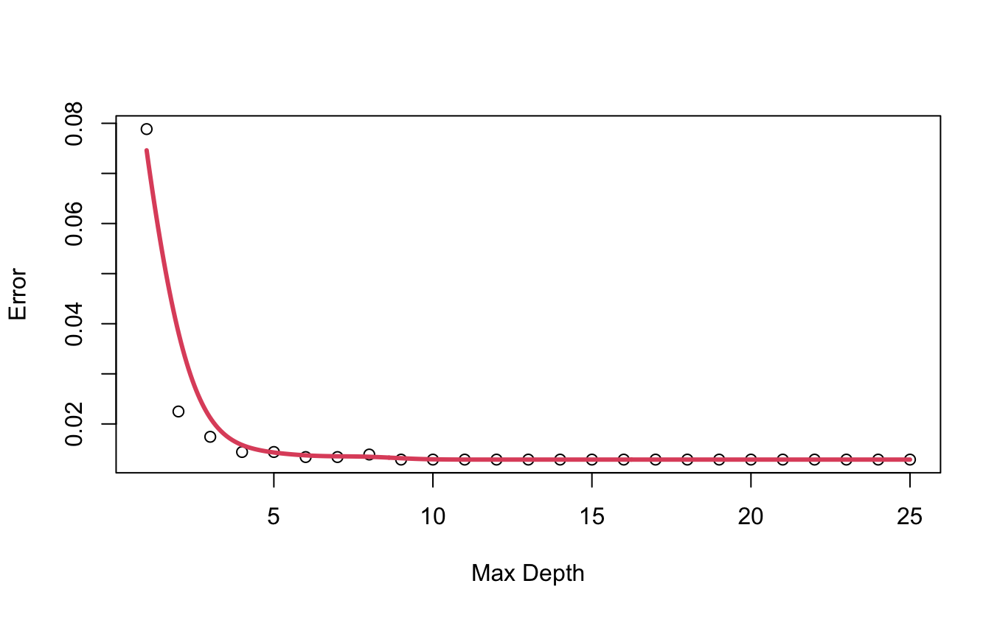
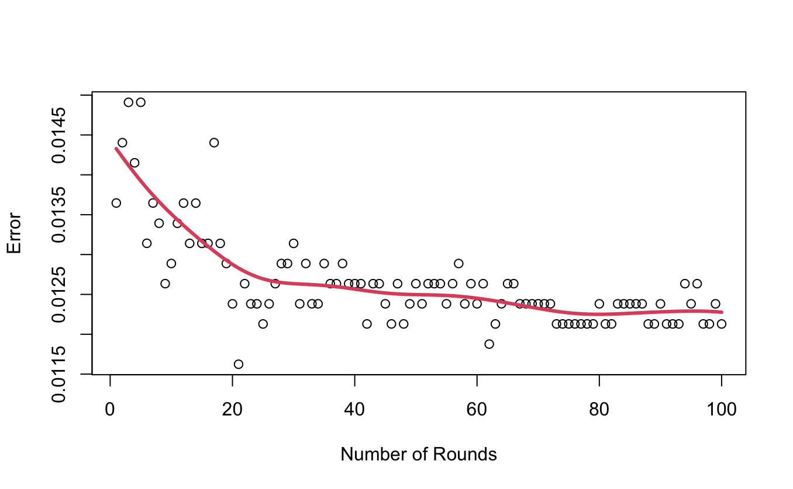
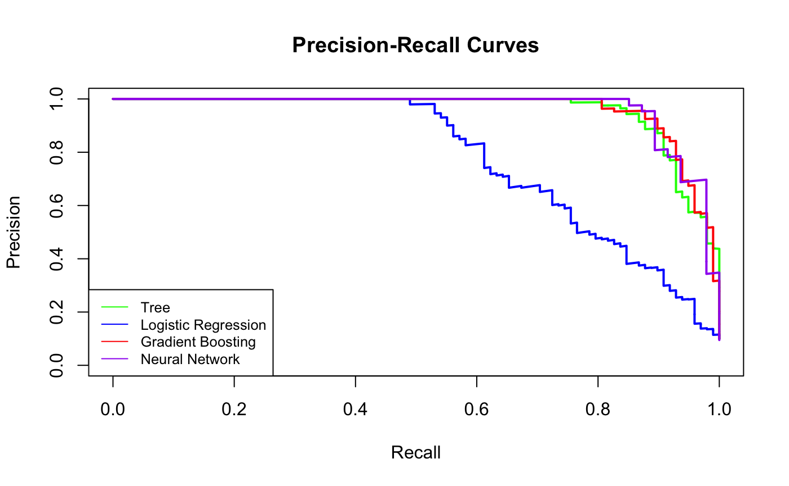
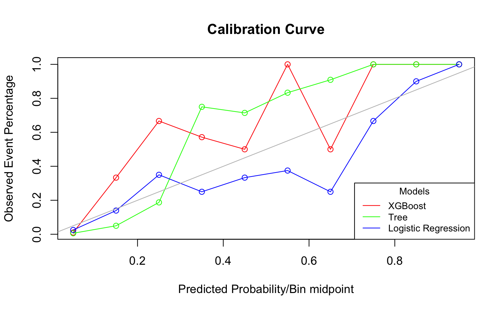

A Comparative Study of Classification Techniques for Predicting Personal Loan Uptake
The data set analysed in this report contains information of 5000 customers, including their demographics, financial status, and banking behaviors. The objective is to predict whether a customer would accept a personal loan offered by the bank, with the aim of identifying potential candidates for upselling personal banking loans. After exploring various different classification models, the model best suited to the task was the Extreme Gradient Boosting Classification Learner (xgboost). To explain this model we will first need to discuss decision trees. Decision trees mimic real trees in the sense that you start the base of the tree, the tree then splits into branches based on different choices, with each branch leading to another decision (which would create another smaller branch) or, ultimately, a prediction. These decisions continue until the tree reaches a point where it can’t split anymore, either because it’s reached a maximum depth or there aren’t enough data points left. When a new data point is presented to the decision tree, it follows the branches in the tree to reach a final prediction. Extreme gradient boosting combines several of these trees, where the next tree in the sequence tries to predict what the previous tree could not do. This model managed to correctly identify whether or not a person can be upsold on their personal loan 98.1% of the time. The model outperforms all the other models tested while still being computational quick.
In the investigation of hyperparameters for random forests, an iterative process was employed to explore the impact of varying the number of trees and the depth of the trees. The analysis revealed that as these parameters were adjusted, both variables reached a point where further adjustments did not significantly impact the performance metrics being evaluated. This plateau suggests that there is an optimal config- uration for the number and depth of trees beyond which additional adjustments do not yield substantial improvements in model performance. The chosen hyperparameters were 10 and 20 for tree depth and number of trees respectively.
Tree depth against error
Number of trees against error
Extreme Gradient Boosting builds a series of decision trees in order, where each new tree corrects the errors made by the previous ones. It optimizes a loss function by adding new trees that minimize the residual errors. Extreme gradient boosting uses a gradient boosting framework, which means it fits new models to the residuals of the previous models, allowing it to capture complex patterns in the data. Likewise to the random forests an iterative process was used to explore the impact of maximum tree depth and number of rounds for the gradient boosted method. The analysis showed that as the tree depth was adjusted, there was a plateau in model performance, indicating that beyond a certain depth, increasing tree complexity did not significantly improve predictive accuracy. On the other hand, the number of boosting rounds showed a continuous decrease in performance, albeit with diminishing returns. This suggests that increasing the number of rounds improves model performance, but the gains become less significant as more rounds are added
Tree depth against error
Number of trees against error
A variety of activation functions were tested on the neural network. Activation functions introduce non-linearity into the network, allowing neural networks to learn complex patterns and relationships in the data. Without activation functions, a neural network would essentially be a series of linear transformations, making it limited in its ability to model non-linear relationships. Through trial and error the sigmoid activation parameter was chosen as it yielded the lowest classification error
The neural network uses a dropout rate of 0.5 this means in the drop out layers half of the neurons will be randomly removed from the model. This stops the model from having too much reliance on a single neuron which forces the network to learn a more generalised and robust representation of the data and as a result obtaining a more accurate result. The neural network could potentially achieve higher accuracy compared to the selected gradient boosting method. However, optimizing its performance involves tuning numerous parameters, such as the size and number of hidden layers, activation functions, and dropout rates. Optimising all these parameters would be not worth the time or the computational power required as would cost more than the potential increased accuracy would yield.
In this dataset, false positive rates are of greater concern than false negative rates because of the increased risk associated with assets if individuals are unable to pay back. A higher false positive rate means mistakenly identifying individuals as low risk when they are actually high risk, leading to potential losses for the lender. Upon examining the Receiver Operating Characteristic curve and Precision Recall Curves, it is evident that, with the exception of logistic regression, all models exhibit similar performance. The ROC curve illustrates the trade-off between true positive rate and false positive rate across different classification thresholds. The similarity in performance across models suggests that they are all effective at distinguishing between positive and negative instances in the dataset. However, logistic regression stands out as having performed worse than the others.
Tree depth against error
Number of trees against error
Since the ROC and precision recall can tell us no further information about the false positive rate and the false negative rate the results tables above need to be examined to determine which models have the lowest values. It is seen that the Neural Network has the smallest values for false positive and negative rates. The calibration curve shows the relationship between predicted probabilities generated by a predictive model and the observed event frequencies. This helps assess the reliability of the model’s predicted probabilities by comparing them to the actual outcomes. IN a best case scenario, the predicted probabilities would closely match the observed event frequencies, resulting in a calibration curve that closely follows the grey diagonal line. The distance from this diagonal line indicate areas where the model’s predicted probabilities are either over confident or under confident, providing insights into potential model calibration issues. Given this information it can be seen in the graph that all three models follow the diagonal line fairly well, so there does not appear to any calibration issues, although it could be said that the Xgboost seems a bit more sporadic than the other two.
Number of trees against error
